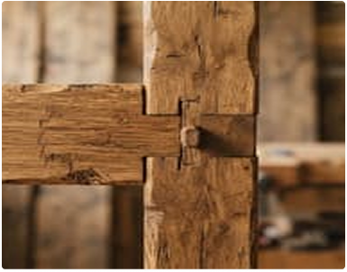
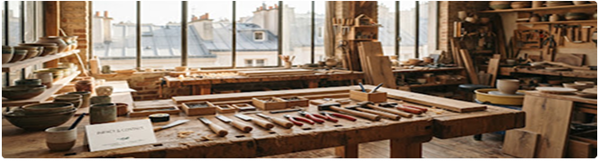

18 450 kg
Rebuts nobles valorisés
Chutes d'ateliers, bois de charpente et rebuts industriels recyclés.

EcoArt
Audit de circularité et dialogue ouvert.
MISE À JOUR CERTIFIÉE
T1 2025 · Norme ADEME
Rebuts nobles valorisés
Chutes d'ateliers, bois de charpente et rebuts industriels recyclés.
Émissions évitées
Comparaison avec la production industrielle d'équivalents neufs non circulaires.
Transmission & ateliers
Apprentissage de la réparation, du surcyclage et insertion locale.
Eau potable préservée
Procédés de décapage et de teinture végétale à circuit fermé.
TYPOLOGIE DES FLUX
100 % revalorisé
Chaque flux de déchet est répertorié par son origine d'extraction géolocalisée (dans un rayon moyen de 48 km autour des ateliers régionaux).
Zéro transport aérien, collage bio-sourcé sans solvant volatile.
AUDIT INDÉPENDANT
Tous nos indicateurs sont audités semestriellement selon les règles de l'Analyse du Cycle de Vie (ACV), du berceau au réemploi.
Chaque flux de déchet est répertorié selon son origine géolocalisée, dans un rayon moyen de 48 km autour des ateliers régionaux.
TRAÇABILITÉ MATIÈRE

Chaque création EcoArt est associée à un numéro de lot mentionnant le site d'extraction d'origine.
PROXIMITÉ & RENCONTRE
Venez toucher les matières, échanger avec les maîtres artisans ou déposer vos gisements réemployables.

Contact : Claire Delatour
Téléphone : +33 (0)1 89 45 20 10
Courriel : contact@ecoart-artisans.fr
La Manufacture EcoArt, espace collaboratif et recyclerie ouverte.
ÉCRIVEZ-NOUS
Que vous soyez un particulier en quête d'une pièce sur mesure, une entreprise préparant des cadeaux d'affaires RSE ou un artisan souhaitant rejoindre la coopérative, contactez notre équipe.
Réponse artisanale sous 24 heures ouvrées.
En plus du tiers-lieu parisien, nos ateliers de forge, verrerie solaire et tissage se déploient dans plusieurs régions françaises.
Découvrir la carte complète des artisansDécouvrez notre réseau d'artisans et nos ateliers de réemploi dans différentes régions françaises.
Foire aux questions
Nous comparons l'impact des matières réemployées à celui de produits neufs équivalents, selon les principes de l'Analyse du Cycle de Vie (ACV).
Oui, vous pouvez nous contacter pour présenter vos matériaux et discuter des possibilités de réemploi avec notre équipe.
Oui, nous proposons des ateliers autour du réemploi, de la réparation et de la création responsable.